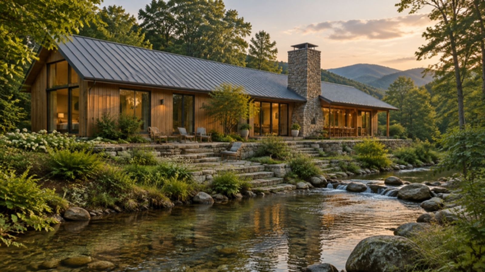
The home
room for everyone
A long timber house beside a creek, planned around a kitchen big enough for three generations.
- Size
- 3,900 ft²
- Built in
- 15 months
- Delivered
- On schedule
- Project
- Custom build
An illustrative home. Its story shows the kind of work we do.
Drawing → doorstep
Long, low and close to the water.
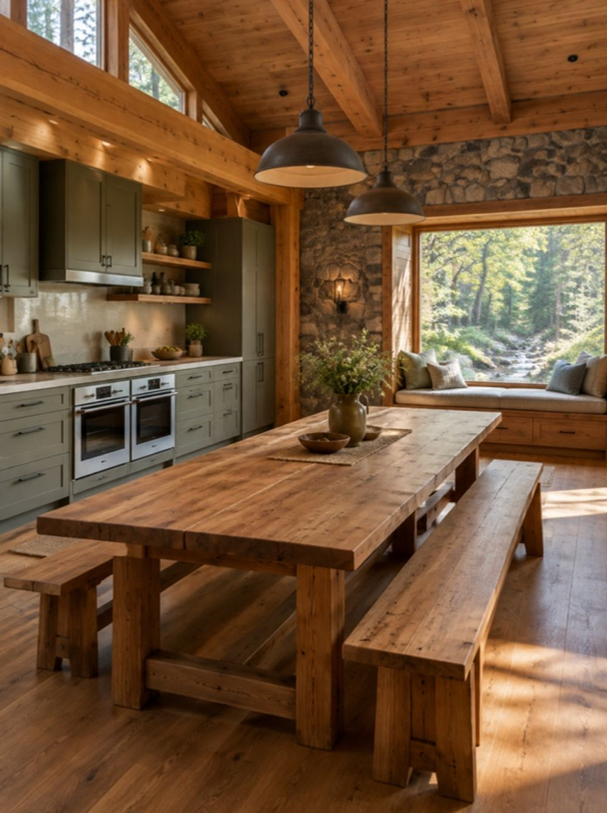
The kitchen
A twelve-foot table, two ovens and a window seat for whoever isn’t cooking.
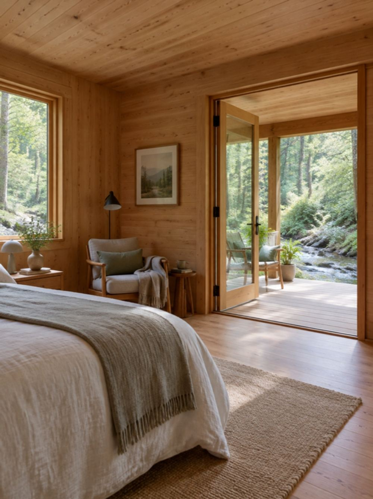
Grandparents’ wing
A step-free suite at the quiet end, with its own porch onto the creek.
The challenges
What made this one hard.
- Problem
A site on the edge of the creek’s flood plain.
SolutionThe house sits on a raised plinth two feet above the 100-year flood line, and the garden is left free to flood.
- Problem
Three generations, three sets of needs.
SolutionWe held design sessions with each generation and planned a quiet room for everyone around one shared kitchen.
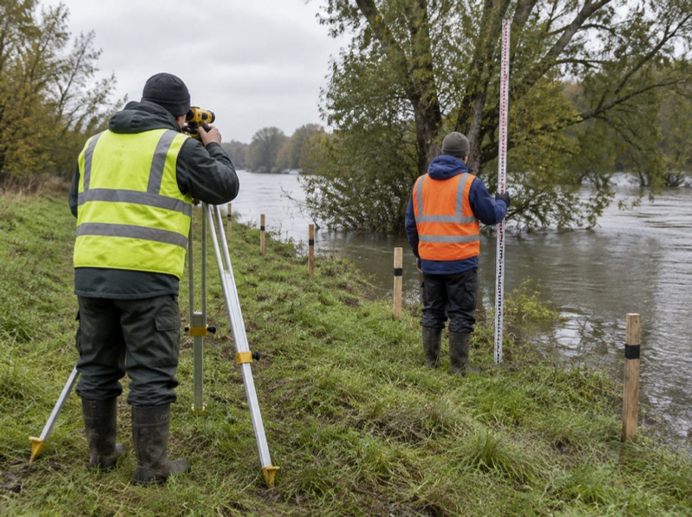
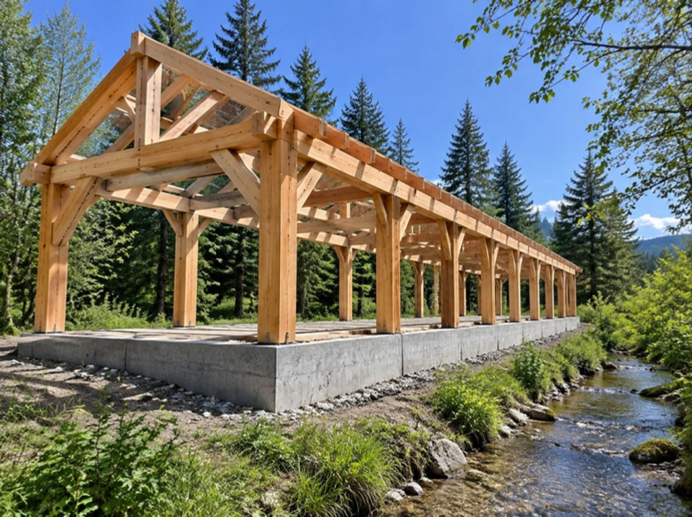
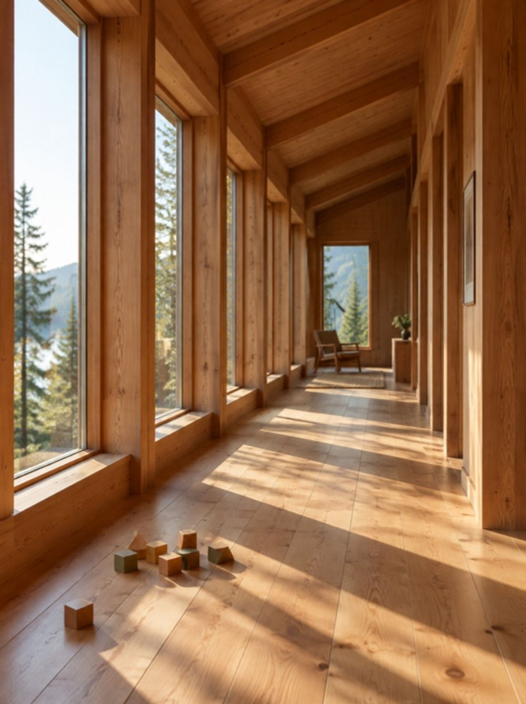
The long hall
A Douglas fir gallery that links every room and doubles as a rainy-day play space.
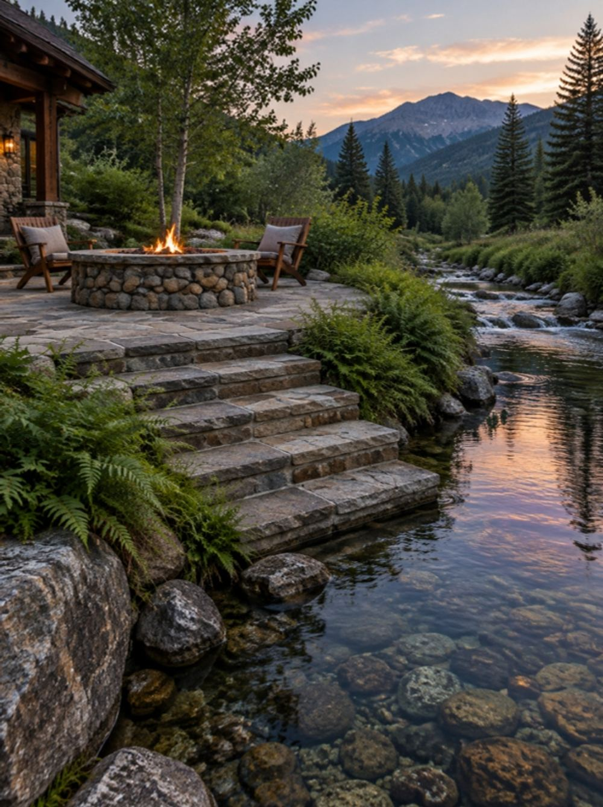
The creek terrace
Stone steps down to the water, and a fire pit built from stone found on site.
The build · 15 months
The build
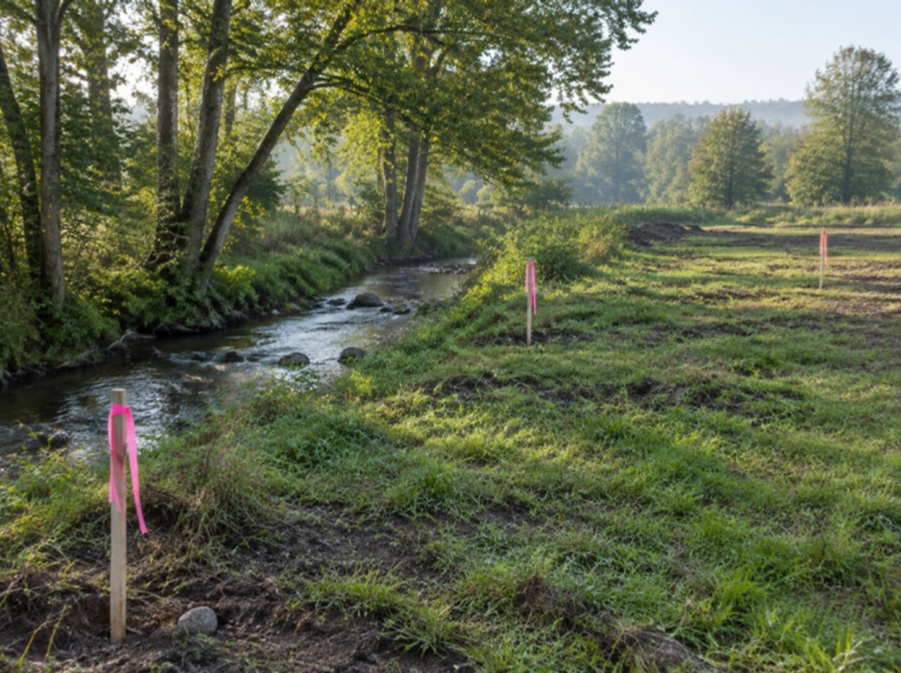
Month 2 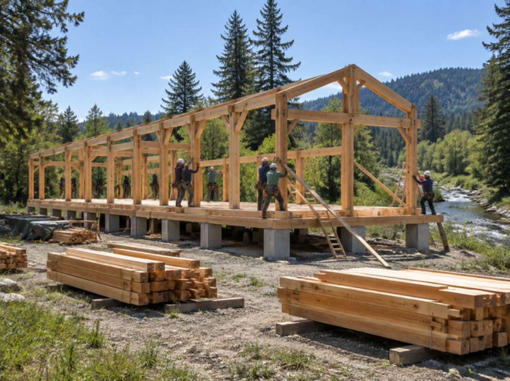
Month 6 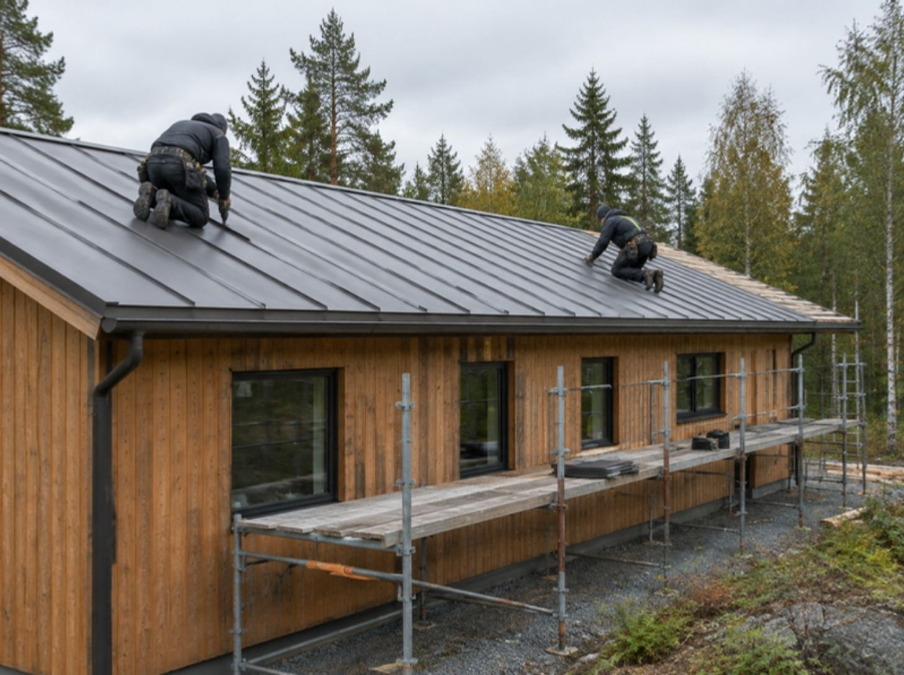
Month 10 Month 15
Planned 15 months · Actual 15 months · 5 change orders, each approved within 2 working days
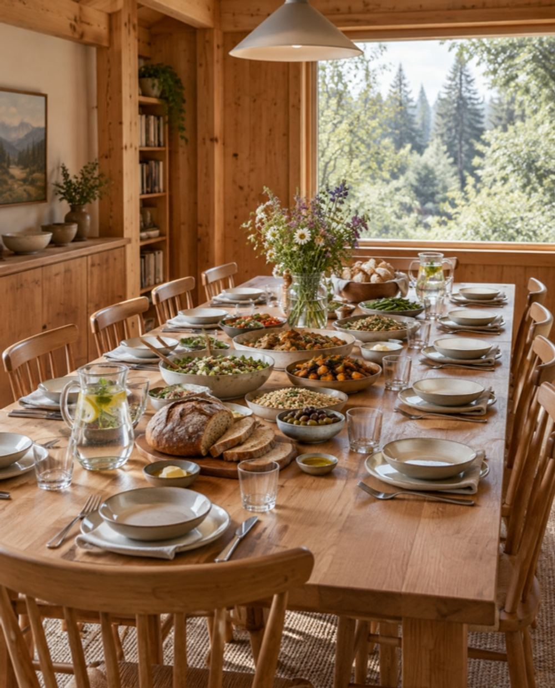
“Sunday lunch used to mean driving to three houses. Now everyone just comes home.”
- Best part
- The table. Always the table.
- Surprised by
- The weekly reports. We read every one.
- Would we again?
- In a heartbeat.
Materials
Timber · Fieldstone · Zinc
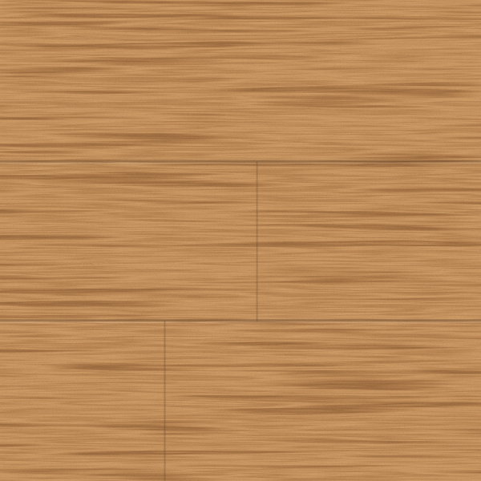
TimberDouglas fir frame and cladding.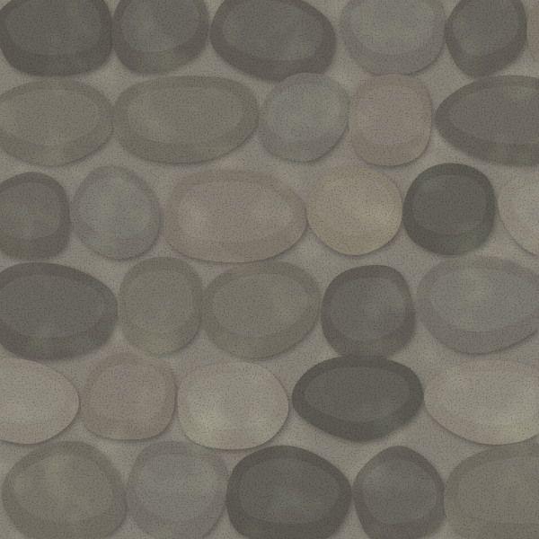
FieldstoneChimney and garden walls.- ZincRoof and rainwater details.